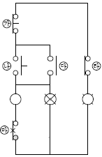
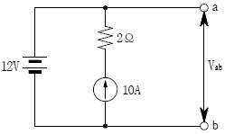
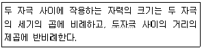
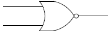
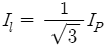
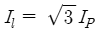
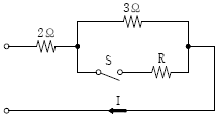
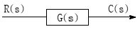
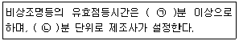

소방설비산업기사(전기) (2010-09-05 기출문제)
1과목: 소방원론
1. 건물화재에서의 사망원인 중 가장 큰 비중을 차지하는 것은?
- 연소가스에 의한 질식
- 화상
- 열충격
- 기계적 상해
(정답률: 96%)

2. 금수성 물질이 아닌 것은?
- 칼륨
- 나트륨
- 알킬알루미늄
- 황린
(정답률: 77%)
3. 피난대책의 일반적 원칙이 아닌 것은?
- 피난수단은 원시적인 방법으로 하는 것이 바람직하다.
- 피난대책은 비상시 본능 상태에서도 혼돈이 없도록 한다.
- 피난경로는 가능한 한 길이어야 한다.
- 피난시설은 가급적 고정식 시설이 바람직하다.
(정답률: 83%)
4. 다음 중 점화원이 될 수 없는 것은?
- 전기불꽃
- 정전기
- 마찰열
- 기화열
(정답률: 92%)
5. 대체 소화약제의 물리적 특성을 나타내는 용어 중 지구온난화지수를 나타내는 약어는?
- ODP
- GWP
- LOAEL
- NOAEL
(정답률: 82%)
6. 연소를 멈추게 하는 방법이 아닌 것은?
- 가연물을 제거한다.
- 대기압 이상으로 가압한다.
- 가연물을 냉각시킨다.
- 산소농도를 낮춘다.
(정답률: 88%)
7. 이황화탄소가 연소시 발생하는 유독성의 가스는?
- 황화수소
- 이산화질소
- 아세트산가스
- 아황산가스
(정답률: 70%)
8. 화재시 흡입된 일산화탄소는 혈액 내의 어떠한 물질과 작용하여 사람이 사망에 이르게 하는가?
- 수분
- 백혈구
- 혈소판
- 헤모글로빈
(정답률: 89%)
9. 연소반응이 일어나는 데 필요한 조건에 대한 설명으로 가장 거리가 먼 것은?
- 산화되기 쉬운 물질
- 충분한 산소공급
- 비휘발성인 액체
- 연소반응을 위한 충분한 온도
(정답률: 89%)
10. 제3류 위험물이며 금수성 물질에 해당하는 것은?
- 염소산염류
- 적린
- 탄화칼륨
- 유기과산화물
(정답률: 75%)
11. 탄화칼슘이 물과 반응할 때 생성되는 가연성 가스는?
- 메탄
- 아세틸렌
- 에탄
- 프로필렌
(정답률: 80%)
12. 화재의 분류에서 A급 화재에 속하는 것은?
- 유류
- 목재
- 전기
- 가스
(정답률: 92%)
13. 소화약제의 화학식에 대한 표기가 틀린 것은?
- C3F3 : FC-3-1-10
- N2 : IG-100
- CF3CHFCF3 : HFC-227ea
- Ar : IG-01
(정답률: 40%)
14. 물의 증발잠열은 약 몇 cal/g인가?
- 79
- 539
- 750
- 810
(정답률: 91%)
15. 다음 중 할론 1301의 화학식은?
- CBr3Cl
- CBrCl3
- CF3Br
- CFBr3
(정답률: 88%)
16. 조리를 하던 중 식용유화재가 발생하면 신선한 야채를 넣어 소화할 수 있다. 이때의 소화방법에 해당하는 것은?
- 희석소화
- 냉각소화
- 부촉매소화
- 질식소화
(정답률: 83%)
17. 다음 중 폭발의 위험성이 가장 낮은 분진은?
- 커피분
- 밀가루분
- 알루미늄분
- 시멘트분
(정답률: 83%)
18. 제1종 분말 소화약제의 주성분은?
- 탄산수소나트륨
- 탄산수소칼슘
- 요소
- 황산알루미늄
(정답률: 78%)
19. 제4류 위험물 중 제1석유류~제4석유류를 각 품명별로 구분하는 분류의 기준은?
- 발화점
- 인화점
- 비중
- 연소범위
(정답률: 87%)
20. 화재시 발생하는 유독가스로 가장 거리가 먼 것은 어느 것인가?
- 염화수소
- 이산화황
- 암모니아
- 인산암모늄
(정답률: 65%)
2과목: 소방전기회로
21. 100V의 전압에서 2A의 전류가 흐르는 전열기를 10시간 사용했을 때의 소비 전력량[kWh]은?
- 1kWh
- 2kWh
- 10kWh
- 20kWh
(정답률: 75%)
22. 온도변화에 따라 저항값이 변하는 성질을 이용하여 온도감지장치에 사용하는 소자는?
- 다이오드
- 트랜지스터
- 콘덴서
- 서미스터
(정답률: 85%)
23. 그림은 자기유지 등 전자개폐기를 이용한 제어회로의 일부이다. ㉠ OFF 스위치와 ㉡ 계 전기 보조 b 접점은?

- ㉠ : ㉮, ㉡ : ㉱
- ㉠ : ㉮, ㉡ : ㉰
- ㉠ : ㉯, ㉡ : ㉰
- ㉠ : ㉯, ㉡ : ㉱
(정답률: 62%)
24. 어느 전동기가 회전하고 있을 때 전압 및 전류의 실횻값이 각각 50V, 3A이고 역률이 0.6이라면 무효전력은?
- 18Var
- 90Var
- 120Var
- 210Var
(정답률: 58%)
25. 부궤환 증폭기에서 궤환이 없을 때 전압이득이 80dB이고 궤환률이 0.001이면 증폭기의 이득은 약 몇 dB인가?
- 30dB
- 40dB
- 60dB
- 80dB
(정답률: 39%)
26. 전선을 접속할 때 주의하여야 할 사항으로 잘못된 것은?
- 접속부는 노출시켜 확인이 가능하도록 할 것
- 접속부분의 절연성능은 타 부분과 동등이상이 되도록 할 것
- 접속점의 전기저항이 증가하지 않도록 할 것
- 전선의 세기를 20% 이상 감소시키지 말 것
(정답률: 83%)
27. 온도를 임피던스로 변환시키는 요소는?
- 측온저항
- 광전지
- 광전다이오드
- 전자석
(정답률: 61%)
28. 60㎐ 교류의 위상차가 π/6[rad]이다. 이 위상차를 시간으로 표시하면 몇 sec인가?
- 31.4sec
- 62.8sec
- 1/377sec
- 1/720sec
(정답률: 44%)
29. 온도, 유량, 압력 등의 공업프로세스 상태량을 제어량으로 하는 제어계는?
- 서보기구
- 자동제어
- 정치제어
- 프로세스제어
(정답률: 74%)
30. 그림과 같은 회로에서 a, b 사이의 전압 Vab [V]는?

- 8V
- 12V
- 20V
- 32V
(정답률: 71%)
31. 60㎐에서 3Ω의 용량 리액턴스를 갖는 콘덴서의 정전용량은 약 몇 ㎌인가?
- 564㎌
- 651㎌
- 884㎌
- 996㎌
(정답률: 54%)
32. 다음이 설명하고 있는 법칙은?

- 쿨롱의 법칙
- 줄의 법칙
- 패러데이의 법칙
- 비오-사바르의 법칙
(정답률: 67%)
33. 저임피던스 부하에서 고전류이득을 얻으려고 할 때 사용되는 증폭방식은?
- 컬렉터접지
- 이미터접지
- 베이스접지
- 바이패스접지
(정답률: 67%)
34. 그림과 같은 논리기호는?

- OR 게이트
- AND 게이트
- NOT 게이트
- NOR 게이트
(정답률: 79%)
35. 대칭 3상 △결선에서 선전류 Il과 상전류 IP 와의 관계는?
- Il=IP

- Il=1/3IP

(정답률: 64%)
36. R-L직렬회로에서 100V, 60㎐의 전압을 가했더니 위상이 30°뒤진 20A의 전류가 흘렀다. 이때 유도리액턴스[Ω]는?
- 0.5Ω
- 2.5Ω
- 5.0Ω
- 7.5Ω
(정답률: 52%)
37. 그림과 같은 회로에서 S를 닫았을 때의 전류가 닫기 전에 흐르던 전류의 2배가 되도록 하려면 R의 저항값[Ω]은?

- 2Ω
- 3/5Ω
- 5/3Ω
- 3Ω
(정답률: 60%)
38. 그림과 같은 블록선도에서 C(s)는?

- G(s)
- G(s)R(s)
- R(s)/G(s)
- G(s)/R(s)
(정답률: 78%)
39. 단상유도전동기의 기동방식으로 잘못된 것은?
- 분상기동
- 반발기동
- 콘덴서기동
- Y-△ 기동
(정답률: 75%)
40. 내부저항이 117Ω인 직류전류계의 최대 측정범위는 150㎃이다. 분류기를 접속하여 전류계를 6A까지 확대하여 사용하고자 하는 경우 분류기의 저항[Ω]은?
- 2.9Ω
- 3.0Ω
- 5.8Ω
- 6.0Ω
(정답률: 56%)
3과목: 소방관계법규
41. 지정수량의 몇 배 이상의 위험물을 취급하는 제조소에는 피뢰침을 설치하여야 하는가?
- 5배
- 10배
- 500배
- 1000배
(정답률: 75%)
42. 소방용수시설ㆍ소화기구 및 설비 등의 설치 명령을 위반한 자에 대한 과태료는?
- 100만 원 이하
- 200만 원 이하
- 300만 원 이하
- 500만 원 이하
(정답률: 54%)
43. 형식승인대상 소방용품에 속하지 않는 것은?
- 가스누설경보기
- 관창
- 안전매트
- 완강기
(정답률: 51%)
44. 위험물제조소에서“위험물제조소”라는 표시를 한 표지의 바탕색은?
- 청색
- 적색
- 흑색
- 백색
(정답률: 63%)
45. 보일러 등의 위치ㆍ구조 및 관리와 화재예방을 위하여 불의 사용에 있어서 지켜야 하는 사항 중 난로의 연통은 건물 밖으로 몇m 이상 나오게 설치하여야 하는가?
- 0.5m
- 0.6m
- 1.0m
- 2.0m
(정답률: 69%)
46. 소방자동차가 화재진압 및 구조ㆍ구급활동을 위하여 출동하는 때 소방자동차의 출동을 방해한 자의 벌칙으로 알맞은 것은?
- 10년 이하의 징역 또는 5천만 원 이하의 벌금에 처함
- 5년 이하의 징역 또는 5천만 원 이하의 벌금에 처함
- 3년 이하의 징역 또는 2천만 원 이하의 벌금에 처함
- 2년 이하의 징역 또는 1천5백만 원 이하의 벌금에 처함
(정답률: 73%)
47. 건축허가 등의 동의대상물의 범위에 속하지 않는 것은?
- 관망탑
- 방송용 송수신탑
- 항공기격납고
- 철탑
(정답률: 58%)
48. 위험물안전관리법상 제1류 위험물의 성질은?
- 산화성 액체
- 가연성 고체
- 금수성 물질
- 산화성 고체
(정답률: 84%)
49. 소방기본법에서 사용하는 용어의 뜻으로 옳지 않은 것은?
- 소방대상물이란 건축물, 차량, 선박(항구 안에 매어둔 선박에 한함), 선박건조구조물, 산림 그 밖의 인공구조물 또는 물건을 말한다.
- 소방본부장이란 특별시ㆍ광역시ㆍ또는 특별자치시ㆍ도 또는 특별자치도에서 화재의 예방ㆍ경계ㆍ진압ㆍ조사 및 구조ㆍ구급 등의 업무를 담당하는 부서의 장을 말한다.
- 소방대장이란 소방본부장 또는 소방서장등 화재, 재난, 재해 그 밖의 위급한 상황이 발생한 현장에서 소방대를 지휘하는 자를 말한다.
- 소방대란 화재를 진압하고 화재, 재난, 재해 그 밖의 위급한 상황에서의 구조ㆍ구급활동 등을 하기 위하여 소방공무원, 의무소방원, 자위소방대로 구성된 조직체를 말한다.
(정답률: 57%)
50. 화재가 발생하는 경우 불길이 빠르게 번지는 특수가연물에 속하는 것으로 잘못된 것은?
- 면화류 100킬로그램 이상
- 나무껍질 400킬로그램 이상
- 볏짚류 1000킬로그램 이상
- 가연성 액체류 2세제곱미터 이상
(정답률: 68%)
51. 위험물안전관리법령에 의하여 자체소방대에 배치하여야 하는 화학소방차의 구분에 속하지 않는 것은?
- 포수용액 방사차
- 고가사다리차
- 제독차
- 할로겐화합물 방사차
(정답률: 79%)
52. 특정소방대상물 중 숙박시설에 해당하지 않는 것은?
- 오피스텔
- 모텔
- 한국전통호텔
- 가족호텔
(정답률: 82%)
53. 소방시설관리업자가 점검을 하지 않은 경우 1차 행정처분기준은?
- 등록취소
- 영업정지 3월
- 경고(시정명령)
- 영업정지 6월
(정답률: 66%)
54. 특정소방대상물 중 지하가(터널 제외)로서 연면적이 몇 m2 이상인 것은 스프링클러설비를 설치하여야 하는가?
- 100m2
- 200m2
- 1000m2
- 2000m2
(정답률: 73%)
55. 제조소 등의 위치ㆍ구조 또는 설비의 변경 없이 해당 제조소 등에서 저장하거나 취급하는 위험물의 지정수량의 배수를 변경하고자 할 때는 누구에게 신고하여야 하는가?
- 소방청장
- 시ㆍ도지사
- 관할소방본부장
- 관할소방서장
(정답률: 73%)
56. 특정소방대상물에 대한 소방시설의 자체점검시 일반적인 종합정밀점검의 점검횟수로 옳은 것은?
- 연 1회 이상
- 연 2회 이상
- 반기별 2회 이상
- 분기별 2회 이상
(정답률: 76%)
57. 특정소방대상물의 발주자는 해당 도급계약의 수급인이 일정한 사유가 발생할 경우에 대하여 도급계약을 해지할 수 있는 바, 그 사유에 해당되지 않는 것은?
- 소방시설업을 휴업 또는 폐업한 경우
- 소방시설업이 영업정지된 경우
- 소방시설업이 등록이 취소되었을 경우
- 정당한 사유없이 20일 이상 소방시설공사를 계속하지 아니하는 경우
(정답률: 82%)
58. 소방안전관리자가 작성하는 소방계획의 내용에 포함되지 않는 것은?
- 소방시설공사 하자의 판단기준에 관한 사항
- 소방시설ㆍ피난시설 및 방화시설의 점검, 정비계획
- 공동 및 분임소방안전관리에 관한 사항
- 소화 및 연소방지에 관한 사항
(정답률: 56%)
59. 피난구유도등 또는 통로유도등을 화재안전기준에 적합하게 설치할 경우는 그 유도등의 유효범위 안의 부분에서 설치가 면제되는 소방시설은?
- 휴대용 비상조명등
- 비상조명등
- 피난유도표지
- 피난유도선
(정답률: 43%)
60. 특정소방대상물 중 근린생활시설에 속하지 않는 것은?
- 조산원
- 박물관
- 치과의원
- 산후조리원
(정답률: 77%)
4과목: 소방전기시설의 구조 및 원리
61. 전압을 구분하는 경우 교류에서의 저압이란?(오류 신고가 접수된 문제입니다. 반드시 정답과 해설을 확인하시기 바랍니다.)
- 220V 이하
- 380V 이하
- 600V 이하
- 750V 이하
(정답률: 69%)
62. 자동화재탐지설비에서“경계구역”이란?
- 자동화재탐지설비의 1회선이 화재를 유효하게 감지할 수 있는 구역
- 소방대상물 중 화재신호를 발신하고 그 신호를 수신 및 유효하게 제어할 수 있는 구역
- 감지기나 발신기에서 발하는 화재신호를 수신하여 화재발생을 표시 및 경보할 수 있는 구역
- 전기적 접점 등의 작동에 따른 신호를 수신하여 화재발생을 표시 및 경보할 수 있는 구역
(정답률: 55%)
63. 가스누설경보기 중 가스누설을 검지하여 중계기 또는 수신부에 가스누설신호를 발생하는 부분은?
- 발신기
- 검지기
- 탐지부
- 감지부
(정답률: 30%)
64. 누전경보기의 변류기는 경계전로에 정격전류를 흘리는 경우 그 경계전로의 전압강하는 몇 V 이하이어야 하는가? (단, 경계전로의 전선을 그 변류기에 관통시키는 것이 아닌 경우이다.)
- 0.1V
- 0.5V
- 1V
- 5V
(정답률: 56%)
65. 자동화재속보설비의 속보기의 구조에서 표시 등에 전구를 사용하는 경우 설치방법으로 알맞은 것은?
- 2개를 직렬로 설치
- 2개를 병렬로 설치
- 3개를 직렬로 설치
- 3개를 병렬로 설치
(정답률: 66%)
66. 무선통신보조설비의 분배기의 임피던스 크기는?
- 5Ω
- 50Ω
- 5㏁
- 50㏁
(정답률: 69%)
67. 화재발생상황을 단독으로 감지하여 자체에 내장된 음향장치로 경보하는 것은?
- 비상벨설비
- 자동식 사이렌설비
- 단독경보형 감지기
- 가정용 경보기
(정답률: 89%)
68. 무선통신보조설비의 누설동축케이블을 금속제 지지금구를 이용하여 벽에 고정하고자 하는 경우 몇 m 이내마다 고정시켜야 하는가?
- 4m
- 6m
- 8m
- 10m
(정답률: 59%)
69. 비상방송설비에서 기동장치에 따른 화재신호를 수신한 후 필요한 음량으로 화재발생상황 및 피난에 유효한 방송이 자동으로 개시 될 때까지의 소요시간으로 알맞은 것은?
- 5초 이하
- 10초 이하
- 20초 이하
- 30초 이하
(정답률: 79%)
70. 비상방송설비에서 가변저항을 이용하여 전류를 변화시켜 음량을 크게 하거나 작게 조절할 수 있는 장치는?
- 확성기
- 음량조절기
- 증폭기
- 혼합기
(정답률: 75%)
71. 자동화재속보설비의 속보기는 자동화재탐지 설비로부터 작동신호를 수신하는 경우 몇 초 이내에 소방관서에 자동적으로 신호를 발하여 통보하여야 하는가?
- 5초
- 10초
- 20초
- 30초
(정답률: 58%)
72. 자동화재탐지설비의 감지기에서 정온식 기능을 가진 감지기의 공칭작동온도가 80℃ 이하인 경우 색상 표시는?
- 백색
- 청색
- 적색
- 황색
(정답률: 46%)
73. 공기관식 차동식 분포형 감지기를 설치하는 경우 공기관의 노출부분은 감지구역마다 몇 m 이상이 되어야 하는가?
- 3m
- 6m
- 20m
- 100m
(정답률: 55%)
74. 2급 누전경보기는 경계전로의 정격전류가 몇 A 이하의 전로에 있어서 설치하는가?
- 50A
- 60A
- 70A
- 100A
(정답률: 74%)
75. 자동화재탐지설비의 감지기회로에서 종단저항을 설치하는 주목적은?
- 도통시험을 하기 위하여
- 회로작동시험을 하기 위하여
- 동시작동시험을 하기 위하여
- 화재표시시험을 하기 위하여
(정답률: 84%)
76. 피난구유도등의 표시면과 피난목적이 아닌 안내표시면이 구분되어 함께 설치된 유도등은?
- 복합형 유도등
- 복합표시형 피난구유도등
- 양방향표시유도등
- 집합표시면 피난구유도등
(정답률: 65%)
77. 자동화재탐지설비의 전원회로의 전로와 대지 사이 및 배선 상호간의 절연저항은 경계구역마다 직류 250V의 절연저항측정기를 사용하여 측정한 절연저항이 몇 ㏁ 이상이 되도록 하여야 하는가?
- 0.1㏁
- 0.5㏁
- 5㏁
- 20㏁
(정답률: 66%)
78. ( ㉠ ), ( ㉡ )에 들어갈 수치로 알맞은 것은?

- ㉠ 10 ㉡ 10
- ㉠ 20 ㉡ 20
- ㉠ 30 ㉡ 10
- ㉠ 30 ㉡ 20
(정답률: 53%)
79. 비상콘센트설비에서 하나의 전용회로에 설치하는 비상콘센트는 몇 개 이하로 하여야 하는가?
- 2개
- 3개
- 10개
- 15개
(정답률: 77%)
80. 누전경보기에서 누전화재가 발생한 경계전로의 위치를 표시하는 표시등의 색깔 표시는? (단, 누전등이 설치되지 않는 경우이다.)
- 적색
- 황색
- 청색
- 녹색
(정답률: 66%)